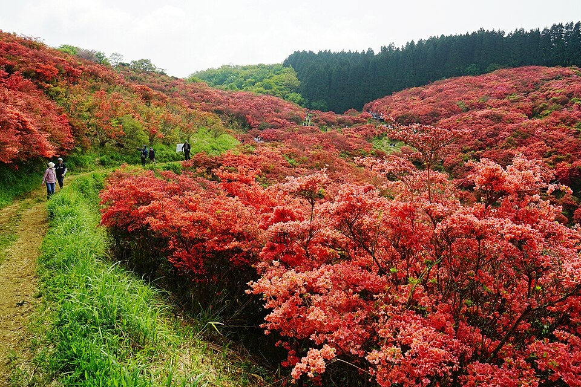
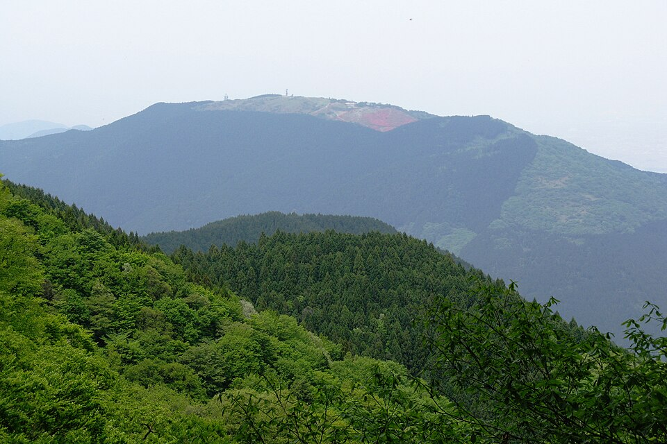
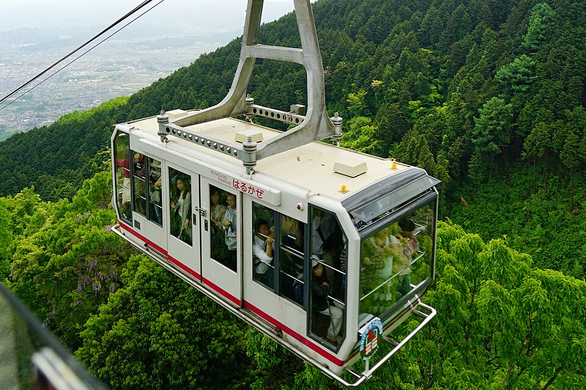

DAY 1 · 上午

img').src=this.src">
img').src=this.src"> img').src=this.src">01 · KATSURAGI
大和葛城山
奈良和大阪交界处 959 米 的山岭，"一目百万本" 的 ツツジ 花海。不用爬山——缆车 6 分钟上到山顶站，老人和小孩都轻松。5 月底虽然 ツツジ 已经尾期，但山顶的新绿和奈良盆地全景仍是这次出行最美的一段。